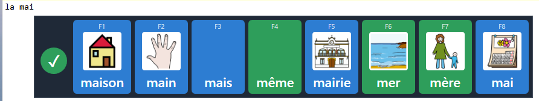
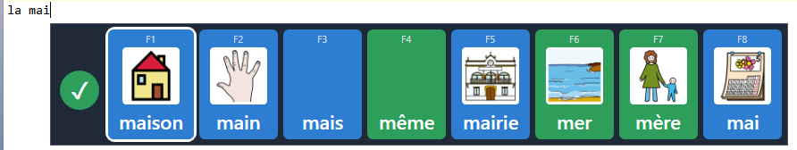
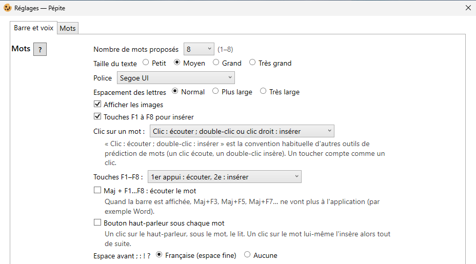
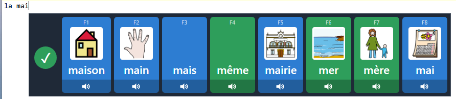
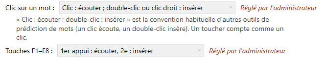

Écouter un mot avant de l'insérer
Nouveau dans Pépite 0.11.0 : dans la barre de mots, l'élève peut d'abord entendre un mot, puis décider de l'écrire. Il vérifie à l'oreille que c'est bien le mot qu'il cherche, avant qu'il n'arrive dans son texte.
Page publiée le .
Pourquoi
Pendant que l'élève tape, Pépite propose des mots dans une barre. Pour un élève qui lit encore difficilement, souvent un élève dys, plusieurs mots se ressemblent à l'écrit : maison
, main
, mairie
… L'image au-dessus du mot aide, mais l'entendre aide encore plus.
Jusqu'ici, un clic écrivait le mot tout de suite. Écouter demandait un clic droit, un geste que peu d'élèves trouvent seuls. Maintenant, écouter est le premier geste, et écrire le second. L'élève choisit en connaissant le mot, au lieu d'insérer puis d'effacer.
Deux mots qui se prononcent pareil (vert
et verre
) sonnent pareil. Pour ceux-là, il faut aussi regarder les lettres et l'image.
Comment ça marche, au départ
Rien à régler : c'est le fonctionnement de Pépite 0.11.0 dès l'installation, pour tous les profils.
À la souris
- Un clic sur un mot : Pépite le dit, sans l'écrire.
- Un double-clic ou un clic droit : Pépite l'écrit dans le texte. Si la voix parle encore, elle finit le mot, elle ne le redit pas.
C'est le geste habituel d'autres outils de prédiction de mots : un clic pour écouter, un double-clic pour écrire. Sur un écran tactile, un toucher compte comme un clic, et un appui long comme un clic droit.

Pictogrammes : Sergio Palao, ARASAAC, Gouvernement d'Aragon, CC BY-NC-SA 4.0
Au clavier, avec F1 à F8
L'élève appuie sur F1 : Pépite dit le premier mot, et un cadre blanc l'entoure. Rien n'est écrit.
C'est le bon mot ? Il appuie encore sur F1 : Pépite l'écrit, sans le redire.
Ce n'est pas le bon ? Il appuie sur une autre touche (F2 pour écouter le deuxième mot), ou il continue à taper : le cadre disparaît.

Pictogrammes : Sergio Palao, ARASAAC, Gouvernement d'Aragon, CC BY-NC-SA 4.0
Les réglages
Chaque élève est différent. Un adulte peut changer ces choix dans Réglages → onglet « Barre et voix » (un clic sur le biscuit de Pépite, près de l'horloge, puis Réglages…). Les choix valent pour le profil de l'élève ; si un code enseignant protège les réglages, Pépite le demande.

- Clic sur un mot
- Trois choix :
- Clic : écouter ; double-clic ou clic droit : insérer (au départ) ;
- 1er clic : écouter, 2e clic : insérer : comme avec les touches, un premier clic fait entendre le mot et l'entoure du cadre blanc, un second clic sur le même mot l'écrit. Utile pour un élève qui a du mal à faire un double-clic ;
- Insérer tout de suite (clic droit : écouter) : un clic écrit le mot, comme avant ; le clic droit le fait entendre.
- Touches F1–F8
- Deux choix : 1er appui : écouter, 2e : insérer (au départ), ou Insérer tout de suite (comme avant). Ce choix ne change pas le clic, et le clic ne change pas les touches.
- Maj + F1…F8 : écouter le mot
- Décochée au départ. Cochée, Maj + F3 dit le troisième mot, sans l'écrire. Quand la barre est affichée, ces touches ne vont plus au programme dans lequel l'élève écrit.
- Bouton haut-parleur sous chaque mot
- Décochée au départ. Cochée, une bande avec un haut-parleur apparaît sous chaque mot : un clic sur la bande fait entendre le mot, un clic sur le mot l'écrit tout de suite. Chaque geste a sa place, ce qui est plus simple pour certains élèves. La barre devient un peu plus haute, et la liste « Clic sur un mot » est alors grisée.

Pictogrammes : Sergio Palao, ARASAAC, Gouvernement d'Aragon, CC BY-NC-SA 4.0
Retrouver l'ancien fonctionnement (le mot s'écrit tout de suite) : choisissez Insérer tout de suite (clic droit : écouter) pour « Clic sur un mot » et Insérer tout de suite pour « Touches F1–F8 ».
Avec le Narrateur, l'Accès vocal ou un contacteur
Un élève peut choisir un mot sans souris ni clavier : avec le Narrateur de Windows, avec l'Accès vocal (cliquer maison
) ou avec un logiciel de contacteur. Pépite suit alors le choix « Touches F1–F8 » : au départ, activer un mot le fait entendre, l'activer une seconde fois l'écrit. Avec Insérer tout de suite, il s'écrit dès la première fois. Dans les deux cas, la fenêtre où l'élève écrit reste au premier plan.
Nous l'avons vérifié par un essai automatique qui agit comme ces outils. Avec le Narrateur, l'Accès vocal et les contacteurs, cela devrait donc fonctionner de la même façon : dites-nous si ce n'est pas le cas.
À l'école : un réglage pour tout l'ordinateur
Le service informatique peut imposer ces deux choix sur tous les ordinateurs de l'établissement, dans la configuration de l'établissement. Dans les réglages, les deux listes sont alors grisées, avec la mention Réglé par l'administrateur
: ni l'élève ni l'enseignant ne peuvent les changer sur ce poste.

Pour l'informaticien : Installer dans une école, dans l'aide, et le fichier DEPLOIEMENT.txt.
En résumé
| Geste | Au départ | Avec « Insérer tout de suite » |
|---|---|---|
| Un clic sur un mot | Pépite dit le mot | Pépite écrit le mot |
| Double-clic ou clic droit | Pépite écrit le mot | Clic droit : Pépite dit le mot |
| F1 à F8, une fois | Pépite dit le mot (cadre blanc) | Pépite écrit le mot |
| La même touche, une seconde fois | Pépite écrit le mot | — |
| Narrateur, Accès vocal ou contacteur (normalement) | 1re fois : dit ; 2e fois : écrit | Écrit tout de suite |